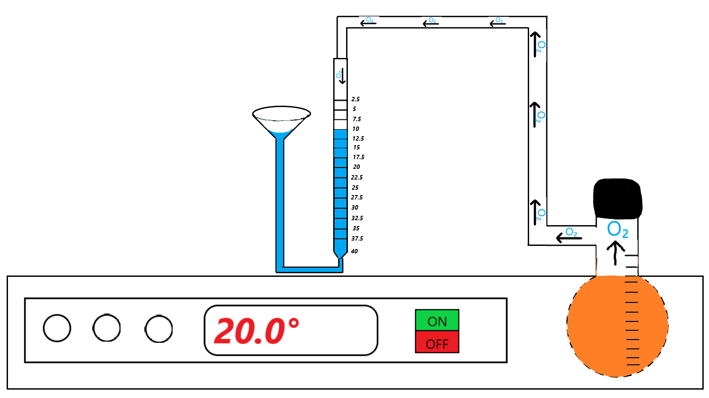

Не выключая секундомера в течение 5-7 минут, через каждую минуту следует
замерять объем выделившегося кислорода, строго совмещая уровни в бюретке и
сосуде. Результаты сразу же записать в таблицу. (Для записи в таблицу нажмите на секундомер)

3 минуты
Объем выделившегося кислорода при разложении Н2О2 при температурe 20° C
| Τмин |
1 |
2 |
3 |
4 |
5 |
6 |
| Vмл |
2,5 |
5,5 |
10 |
|
|
|